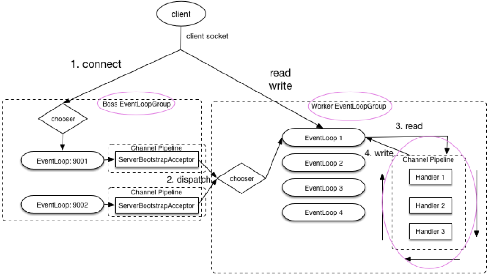

Netty
Table of Contents
Table of Contents
| Author | Hao Ruan (ruanhao1116@gmail.com) |
| Date | 2019-06-30 11:16:21 |
1 核心组件
1.1 ByteBuf
1.1.1 Heap Buffer
- 存储于堆空间（实际数据存放在字节数组中）
- 优点：快速创建与释放，并提供直接访问内部字节数组的方法
- 缺点：进行 I/O 操作时， 需要先将数据复制到直接缓冲区中 再进行网络传输
- 多用于业务逻辑的实现
1.1.2 Direct Buffer
- 由操作系统在本地内存中分配空间，不占用堆空间
- 优点：I/O 性能好，可以实现零拷贝
- 缺点：分配与释放速度慢（可以通过 内存池 解决这个问题）
- 多用于 I/O 通信
1.1.3 自旋锁在引用计数实现中的应用
AbstractReferenceCountedByteBuf:retain0(int increment) (v4.0.15)
public ByteBuf retain(int increment) { if (increment <= 0) { throw new IllegalArgumentException("increment: " + increment + " (expected: > 0)"); } for (;;) { int refCnt = this.refCnt; if (refCnt == 0) { throw new IllegalReferenceCountException(0, increment); } if (refCnt > Integer.MAX_VALUE - increment) { throw new IllegalReferenceCountException(refCnt, increment); } if (refCntUpdater.compareAndSet(this, refCnt, refCnt + increment)) { // CAS operation break; } } return this; }
1.1.4 在 Pipeline 中的创建与释放
1.1.4.1 初始 ByteBuf 创建
参见 io.netty.channel.nio.AbstractNioByteChannel.NioByteUnsafe.read()
1.1.4.2 最终 ByteBuf 释放
参见:
TailContext.userEventTriggered(ChannelHandlerContext, Object)HeadContext.write(ChannelHandlerContext, Object, ChannelPromise)
1.2 EventLoop/EventLoopGroup
1.2.1 类继承关系

1.2.2 线程模型

- 一个 EventLoopGroup 中包含一个或多个 EventLoop
- 一个 EventLoop 在整个生命周期中 只会绑定一个 Thread
- 所有由 EventLoop 处理的 I/O 事件都将在与其关联的 Thread 上进行处理
- 一个 Channel 在整个生命周期中 只会注册在一个 EventLoop 上 （保证线程安全）
- 一个 EventLoop 在运行过程中，会被分配给一个或者多个 Channel
- 对一个端口的侦听，只会绑定到 BossEventLoopGroup 中的一个 Eventloop
1.2.2.1 NioEventLoop 执行逻辑

1.2.2.2 Selector.wakeup()
java 的 Selector 在原生的 select api 之上 增加了个 Selector.wakeup() ，目的是唤醒阻塞在 select() 的线程。(通过写入一个字节)
在下述时刻需要被唤醒：
- 注册了新的 channel 或者事件
- channel 关闭， 取消注册
- 优先级更高的事件触发（如定时器事件），希望及时处理
1.2.2.3 Epoll bug 修复
for(;;){ int selectedKeys = selector.select(timeoutMillis); // select with timeout selectCnt ++; // 由于 select 阻塞 而等待了 timeoutMillis 毫秒， 说明阻塞了，没有 bug if (time - TimeUnit.MILLISECONDS.toNanos(timeoutMillis) >= currentTimeNanos) { selectCnt = 1; } else if (SELECTOR_AUTO_REBUILD_THRESHOLD > 0 && selectCnt >= SELECTOR_AUTO_REBUILD_THRESHOLD) { // 在小于 timeoutMillis 毫秒的时间内 select 的次数超过了 阀值(512) 次 rebuildSelector(); selector = this.selector; selector.selectNow();// Select again selectCnt = 1; break; } }
1.2.2.4 Reactor 模型

- mainReactor 对应 bossGroup
- subReactor 对应 workerGroup ，本质是 IO 线程池 ，负责 IO 事件
- Thread Pool 对应用户业务的线程池（即不阻塞 IO 线程池）
1.3 ChannelPipeline
I/O Request via Channel or ChannelHandlerContext
|
+---------------------------------------------------+---------------+
| ChannelPipeline | |
| \|/ |
| +---------------------+ +-----------+----------+ |
| | Inbound Handler N | | Outbound Handler 1 | |
| +----------+----------+ +-----------+----------+ |
| /|\ | |
| | \|/ |
| +----------+----------+ +-----------+----------+ |
| | Inbound Handler N-1 | | Outbound Handler 2 | |
| +----------+----------+ +-----------+----------+ |
| /|\ . |
| . . |
| ChannelHandlerContext.fireIN_EVT() ChannelHandlerContext.OUT_EVT()|
| [ method call] [method call] |
| . . |
| . \|/ |
| +----------+----------+ +-----------+----------+ |
| | Inbound Handler 2 | | Outbound Handler M-1 | |
| +----------+----------+ +-----------+----------+ |
| /|\ | |
| | \|/ |
| +----------+----------+ +-----------+----------+ |
| | Inbound Handler 1 | | Outbound Handler M | |
| +----------+----------+ +-----------+----------+ |
| /|\ | |
+---------------+-----------------------------------+---------------+
| \|/
+---------------+-----------------------------------+---------------+
| | | |
| [ Socket.read() ] [ Socket.write() ] |
| |
| Netty Internal I/O Threads (Transport Implementation) |
+-------------------------------------------------------------------+
1.3.1 Propagation Methods
1.3.1.1 Inbound
- ChannelHandlerContext.fireChannelRegistered()
- ChannelHandlerContext.fireChannelActive()
- ChannelHandlerContext.fireChannelRead(Object)
- ChannelHandlerContext.fireChannelReadComplete()
- ChannelHandlerContext.fireExceptionCaught(Throwable)
- ChannelHandlerContext.fireUserEventTriggered(Object)
- ChannelHandlerContext.fireChannelWritabilityChanged()
- ChannelHandlerContext.fireChannelInactive()
- ChannelHandlerContext.fireChannelUnregistered()
1.3.1.2 Outbound
- ChannelHandlerContext.bind(SocketAddress, ChannelPromise)
- ChannelHandlerContext.connect(SocketAddress, SocketAddress, ChannelPromise)
- ChannelHandlerContext.write(Object, ChannelPromise)
- ChannelHandlerContext.flush()
- ChannelHandlerContext.read()
- ChannelHandlerContext.disconnect(ChannelPromise)
- ChannelHandlerContext.close(ChannelPromise)
- ChannelHandlerContext.deregister(ChannelPromise)
1.4 ChannelFuture
1.4.1 类继承关系

2 代码示例
2.1 ChannelHandler
2.1.1 使用业务线程池
static final EventExecutorGroup group = new DefaultEventExecutorGroup(16); ChannelPipeline pipeline = ch.pipeline(); pipeline.addLast("decoder", new MyProtocolDecoder()); pipeline.addLast("encoder", new MyProtocolEncoder()); // Tell the pipeline to run MyBusinessLogicHandler's event handler methods // in a different thread than an I/O thread so that the I/O thread is not blocked by // a time-consuming task. // If your business logic is fully asynchronous or finished very quickly, you don't // need to specify a group. pipeline.addLast(group, "handler", new MyBusinessLogicHandler());
2.2 TLS
2.2.1 Pre Master Secret
private static final SslContext sslContext = SslContextBuilder .forClient() .sessionCacheSize(8192L) .sessionTimeout(60L) .trustManager(InsecureTrustManagerFactory.INSTANCE) .build(); public void doConnect() { EventLoopGroup group = new NioEventLoopGroup(); Bootstrap b = new Bootstrap(); b.group(group) .channel(NioSocketChannel.class) .remoteAddress("127.0.0.1", 30443) .handler(new ChannelInitializer<SocketChannel>() { @Override public void initChannel(SocketChannel ch) throws Exception { SSLEngine engine = sslContext.newEngine(ch.alloc()); Method initHandshakerMethod = engine.getClass().getDeclaredMethod("initHandshaker"); initHandshakerMethod.setAccessible(true); initHandshakerMethod.invoke(engine); Field handshakerField = engine.getClass().getDeclaredField("handshaker"); handshakerField.setAccessible(true); Object handShakerObj = handshakerField.get(engine); SslHandler sslHandler = new SslHandler(engine); sslHandler.handshakeFuture().addListener(new GenericFutureListener<Future<Channel>>() { @Override public void operationComplete(Future<Channel> future) throws Exception { if (future.isSuccess()) { SSLSession session = engine.getSession(); Field masterSecretField = session.getClass().getDeclaredField("masterSecret"); masterSecretField.setAccessible(true); SecretKey k = (SecretKey)masterSecretField.get(session); String preMasterSecretString = BaseEncoding.base16().encode(k.getEncoded()).toLowerCase(); Class<?> handshakerClass = Class.forName("sun.security.ssl.Handshaker"); Field clientRandomField = handshakerClass.getDeclaredField("clnt_random"); clientRandomField.setAccessible(true); Object clientRandomObj = clientRandomField.get(handShakerObj); Field randomBytesField = clientRandomObj.getClass().getDeclaredField("random_bytes"); randomBytesField.setAccessible(true); byte[] randomBytes = (byte[])randomBytesField.get(clientRandomObj); String clientRandom = BaseEncoding.base16().encode(randomBytes).toLowerCase(); /* this log trace can be used in SSLKEYLOGFILE understood by wireshark */ log.info("CLIENT_RANDOM {} {}", clientRandom, preMasterSecretString); } } }); ch.pipeline().addLast(sslHandler); ch.pipeline().addLast(new SimpleChannelInboundHandler<ByteBuf>() { @Override protected void channelRead0(ChannelHandlerContext ctx, ByteBuf msg) throws Exception { // TODO } }); } }); b.connect(); }